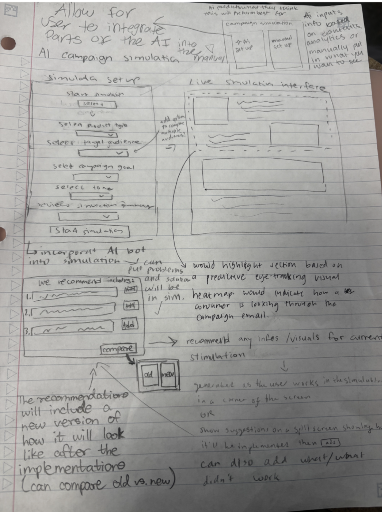
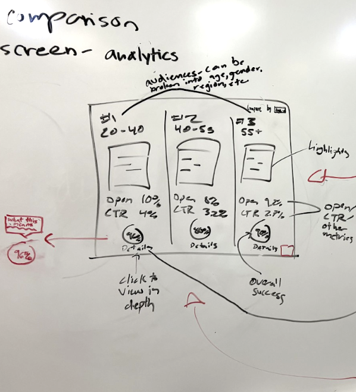

The Challenge
Innovatemap brought us in to define the UX vision for their client Backstroke, a 2024 tech startup that uses AI to generate email and SMS variations for eCommerce companies.
While competitors use AI simply as a copy-generation assistant, Backstroke saw an opportunity to shift the paradigm. The challenge was to reimagine email marketing where AI acts as the strategic architect of entire campaigns, while still solving the marketer's fear of losing brand voice and control.
Phase 1: Market & User Research
We conducted a deep competitive analysis of platforms like Mailchimp, Klaviyo, and Attentive. We discovered a core pattern: personalization is the primary direction across marketing platforms, but steep learning curves deter users.
Interviews with digital marketers and project managers revealed that the most significant pain points are repetitive tasks and the uncertainty of performance before hitting send. Marketers suffer from "decision paralysis" upfront because they don't know how an AI-generated campaign will actually perform.
Phase 2: Blue-Sky Ideation
Free from technical constraints, we engaged in blue-sky ideation and round-robin sketching. This generated six distinct concepts, including a synced calendar campaign generator, adaptive brand guidelines, and conversational SMS bots.
After testing these concepts with a Purdue marketing professor and the Backstroke CEO, we converged on the winning solution: an AI Campaign Simulation integrated with Adaptive Brand Guidelines.


Phase 3: Prototyping the Simulation
We built a mid-fidelity prototype and conducted Cognitive Walkthroughs with stakeholders to test the flow. We refined the transparency of the AI: users needed to see the real-time impact of AI suggestions and possess the ability to inline edit or reject them.
The Final Concept: Predictive AI Simulation
Built using the Untitled UI design system, the high-fidelity prototype allows marketers to set a campaign goal and watch the AI construct a multi-variant strategy.
Crucially, before anything is deployed, the AI predicts the open rates, CTR, and revenue likelihood. The AI then provides "Suggested Changes" (e.g., replacing generic CTAs with first-person CTAs) and instantly shows how that change impacts the simulated analytics. This transforms the product from a blind content generator into an optimization engine, granting marketers total confidence.